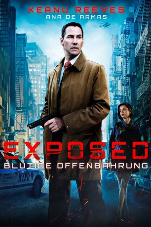

#4627 Exposed
Alternativ: Exposed
 
 IMDB-Wertung: 4.2 / 10
IMDB-Wertung: 4.2 / 10  Tomatometer: 8
Tomatometer: 8  Metascore: 0
Metascore: 0 
Detective Galban Keanu Reeves, finds his partner and close friend, Detective Cullen, murdered in an underground subway. On the hunt for the killer/s, Galban begins to suspect his partner may have been heavily involved in drug dealing and police corruption. As Galban investigates, people who knew Cullen, are conveniently found dead. The closer Galban gets to the truth, both Cullen's wife, Janine Mira Sorvino, and his Lieutenant Christopher McDonald, try to persuade him to back off, fearing his findings may discredit Cullen and expose corruption within the Police Department. Galban's only remaining lead is Isabel, a young, devout, Latino girl, who resides with her in-laws. Galban fears her life could be in jeopardy should he get too close to her. However, Isabel has recently experienced something not from this world, something mystical that she believes is truly a miracle. Not unlike Galban, Isabel is dealing with her own demons from the past; a past that just may lead them to the truth...
Jahr: 2016
Dauer: 101 Minuten
FSK: 16
Land: USA Studio: Lionsgate PremiereTonspuren: DD5.1 - ,
Untertitel: Deutsch, Englisch,
Auflösung: 1080p (1920x800) Größe: 8110 MB
Genre: Krimi, Drama, Mystery, Thriller
Regisseur: Gee Malik Linton
Drehbuch: Barbara Eder
Soundtrack:
Darsteller:
 Ana de Armas als Isabel De La Cruz
Ana de Armas als Isabel De La Cruz- Gabe Vargas als Manuel 'Rocky' De La Cruz
- Sandy Tejada als Yesenia
- Ariel Pacheco als Naldo
 Ismael Cruz Cordova als Jose De La Cruz
Ismael Cruz Cordova als Jose De La Cruz Anthony Ruiz als Homeless Man
Anthony Ruiz als Homeless Man Keanu Reeves als Detective Galban
Keanu Reeves als Detective Galban Mira Sorvino als Janine Cullen
Mira Sorvino als Janine Cullen- Denia Brache als Gloria De La Cruz
- Laura Gómez als Eva De La Cruz
- Jeanette Dilone als Marisol De La Cruz
- Danny Guzman als Gucci De La Cruz
 Christopher McDonald als Lieutenant Galway
Christopher McDonald als Lieutenant Galway- Big Daddy Kane als Jonathan 'Black' Jones
- Venus Ariel als Elisa
- Gilbert Cruz als Grandfather
- Clara Wong als Albino Woman
 Michael Rispoli als Detective Dibronski
Michael Rispoli als Detective Dibronski- Melissa Linton als Detective Ramirez
- Louis Martinez als Big Pete
- Amaurys Rodriguez als Rufy
- Daniel Ojeda Astigarraga als Sal
- Shirley Roeca als Day Care Mother
- Jewel Donohue als Doctor Alain
- Monte Greene als Anthony Galban
- Julissa Roman als Rosa
 Andrew Polk als Martin Himmel
Andrew Polk als Martin Himmel Danny Hoch als Detective Joey Cullen
Danny Hoch als Detective Joey Cullen- Brianne Berkson als Sales Girl , uncredited
 Peter Conboy als New York City Police Officer , uncredited
Peter Conboy als New York City Police Officer , uncredited- Tory Delahunt als Janine's Sister , uncredited
- Andrea Lynn Green als Female Officer , uncredited
- Ash Roeca als Hector , uncredited
- Al Roffe als Mr. Roberto , uncredited
- Stephen Thompson als Albino Floating Man
- Leopold Manswell als Kendu Wallace
- Justice Quiroz als Rafael
- Pablo Gonzalez als Munchy
- Hortencia Colorado als Olga
- Nelson Landrieu als Luca
- Sharon Lee Levine als NYPD Officer , uncredited
- Denise Violante als Lydia , uncredited
Datei: X:\2016(A-F)\Exposed (2016, FSK16, 1920x800).mkv seit 25.10.2016
Festplatte: HD 2016(A-Z)
 Es gibt insgesamt 147 Filme in der Gruppe '2016(A-F)'
Es gibt insgesamt 147 Filme in der Gruppe '2016(A-F)'